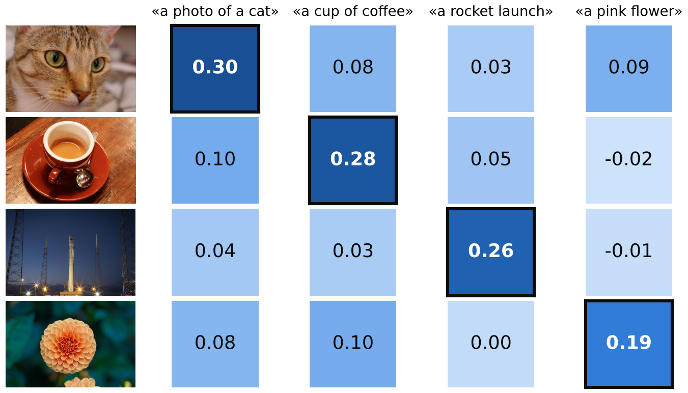
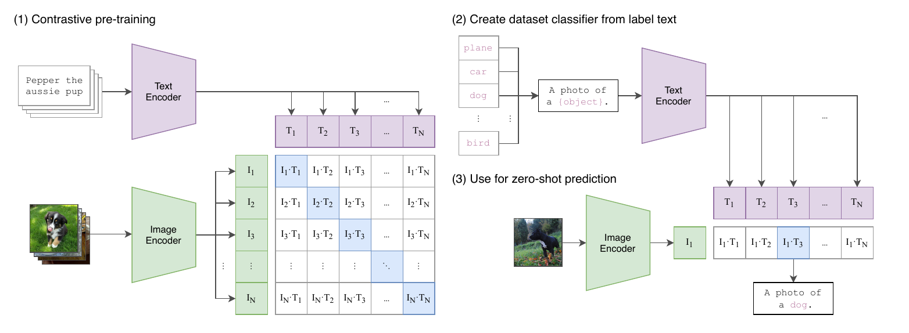
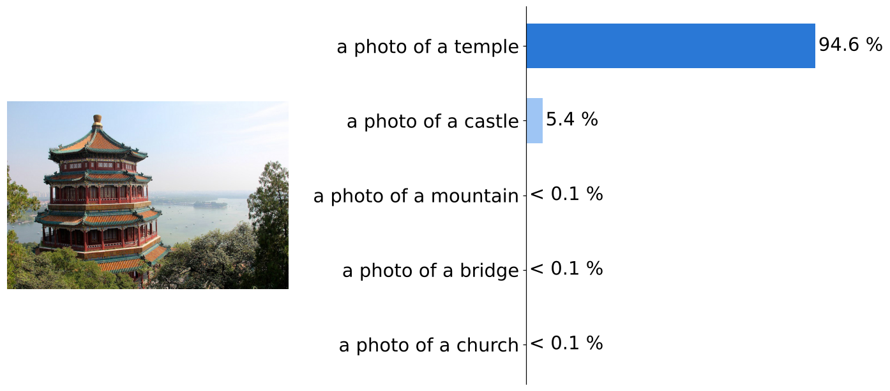
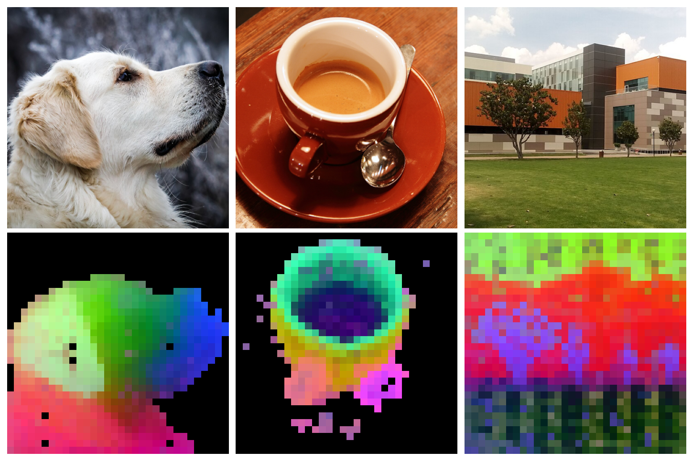

Valores de OpenCLIP ViT-B/32. En la sección de CLIP verás de dónde salen.
Imágenes y texto: CLIP
CLIP
Un clasificador solo conoce las clases con que lo entrenaron
Un modelo de ImageNet distingue 1000 clases; agregar una más exige juntar y etiquetar fotos.
En internet, muchas imágenes ya vienen con texto: un pie de foto, un título, una descripción.
CLIP aprendió de 400 millones de pares (imagen, texto) tomados de internet.
Idea: que el texto sea la supervisión.
CLIP
Dos encoders llevan fotos y textos al mismo espacio
CLIP
Las parejas correctas quedan en la diagonal

Un encoder para fotos y otro para textos. Similitud coseno entre 4 fotos y 4 descripciones: la pareja correcta gana en cada fila y en cada columna. OpenCLIP ViT-B/32 (LAION-400M). Flor: vultilion (CC BY 2.0).CLIP
Cada foto debe elegir su texto entre todo el batch
Es una entropía cruzada por fila: un softmax sobre los \( N \) textos del batch, donde la respuesta correcta es la diagonal.
Se calcula también por columna, cada texto elige su foto, y se promedian: \( \mathcal{L} = \tfrac{1}{2}(\mathcal{L}_{I \to T} + \mathcal{L}_{T \to I}) \).
\( \tau \) es una temperatura aprendida (empieza en 0.07). CLIP usó batches de 32,768 pares: muchos negativos por cada pareja correcta.
Radford et al. (2021), sección 2.3 y figura 3.
CLIP
Entrenar con pares, clasificar con texto

(1) Entrenar con la matriz de pares; (2) escribir un texto por clase; (3) clasificar eligiendo el texto más parecido. Figura de Radford et al. (2021).CLIP
El texto se vuelve el clasificador

Clasificación zero-shot: un prompt «a photo of a {etiqueta}» por clase; gana el más parecido, sin reentrenar. OpenCLIP ViT-B/32 · Foto: danielbuechele (CC BY 2.0).
Error común: el nombre de la clase puede ser ambiguo: «crane» es grúa o grulla. Hay que agregar contexto al prompt: «a photo of a crane, a type of bird».
Checkpoint
Un batch de CLIP tiene 4 fotos y sus 4 descripciones. ¿Cuántas celdas de la matriz son pares negativos?
C. La matriz tiene 4 × 4 = 16 celdas; las 4 de la diagonal son las parejas correctas y las otras 12 son negativos. A cuenta las parejas positivas, no las negativas. B olvida que la diagonal es positiva.
Variantes de CLIP
Cada variante arregla un problema de CLIP
Problema de CLIP
Variante
Qué cambia
Sus datos no son públicos
OpenCLIP
Entrena con LAION, datos públicos de hasta 2 mil millones de pares
Al alumno se le tapan algunos parches \( i \) y debe predecir lo que el maestro ve en ellos.
Se entrena con las dos a la vez, más un regularizador (KoLeo) que reparte los embeddings para que no se amontonen.
Oquab et al. (2023), sección 4. Según el paper, la pérdida por parche mejora tareas como la segmentación.
DINOv2
DINOv2 encuentra las partes de un objeto sin que nadie se las nombre

Cada parche de 14 × 14 píxeles tiene su propio embedding. Las 3 primeras componentes de la PCA se pintan como rojo, verde y azul: oreja, cabeza y hocico salen de colores distintos. DINOv2-small. Fotos: D. Rabich (CC BY-SA 4.0), M. Álvarez Domínguez (CC BY-SA 3.0).DINOv2
CLIP entiende conceptos; DINOv2 ve detalles
CLIP
DINOv2
Aprende de
Pares (imagen, texto)
Solo imágenes
Su embedding captura
Qué es la foto
Cómo se ve: formas, partes, texturas
Puedes buscar con
Texto o imagen
Solo imagen
Úsalo para
Clasificar en clases nuevas solo escribiendo su nombre, buscar por descripción
Encontrar el mismo objeto, segmentar, comparar partes
Checkpoint
Tienes 50,000 fotos de productos sin descripción y quieres encontrar las fotos del mismo modelo exacto de silla. ¿Qué embedding usas?
A. Buscar el mismo modelo exacto es una búsqueda por detalle visual, y DINOv2 aprendió justo eso sin texto. B encuentra cualquier silla, no el modelo exacto. C depende de nombres de archivo que no describen la foto.
Muchas modalidades: ImageBind
ImageBind
No existen pares de todo con todo
CLIP necesitó 400 millones de pares (imagen, texto).
¿Pares (audio, texto)? ¿(IMU, texto)? ¿(térmica, audio)? Casi no existen.
Pero casi todo aparece junto a una imagen: un video trae su audio y el movimiento de la cámara; una cámara de profundidad trae su foto.
Idea: usar la imagen como pegamento entre todas las modalidades.
ImageBind
Cada modalidad se alinea solo con la imagen
ImageBind
Cada modalidad entra a su propio Transformer
Modalidad
Se empareja con
Cómo entra a la red
Audio
Videos (AudioSet)
2 s de audio → espectrograma de 128 bandas → ViT, como si fuera una imagen
Profundidad, térmica
Fotos (SUN RGB-D, LLVIP)
Imagen de un canal → ViT
IMU
Videos (Ego4D)
5 s de acelerómetro y giroscopio → convolución 1D → Transformer
La arquitectura es la misma idea que ya conoces: convertir cualquier señal en tokens.
ImageBind
La pérdida es la de CLIP: cambia la pareja, no la idea
\( \mathbf{q}_i \): embedding de la imagen \( i \); \( \mathbf{k}_i \): embedding de su pareja (su audio, su IMU…).
Arriba, el par real; abajo, el par real más todos los pares falsos del batch.
Se suma también al revés, \( \mathcal{L}_{M,I} \): la imagen busca a su pareja y la pareja busca a su imagen.
ImageBind
Alineó audio y texto sin ver un solo par
Zero-shot entre modalidades: clasifica sonidos escribiendo texto, aunque nunca vio pares (audio, texto).
Búsqueda cruzada: un audio encuentra imágenes; un texto encuentra audios.
Aritmética de embeddings: foto de frutas + sonido de pájaros → fotos de pájaros entre frutas.
Si A está cerca de la imagen y B también, A y B quedan cerca entre sí.
Girdhar et al. (2023).
Checkpoint
ImageBind nunca vio pares (audio, texto). ¿Por qué encuentra el sonido de un perro si escribes «a dog barking»?
B. El audio se alineó con imágenes y el texto ya estaba alineado con imágenes (CLIP); por eso audio y texto quedan cerca sin haberse visto juntos. A falla porque no se usaron pares con texto para el audio. C falla porque no hay transcripción: todo se compara como vectores.
Por qué importa hoy
Los embeddings siguen creciendo
DINOv3 (Meta, 2025): 7 mil millones de parámetros entrenados con 1,700 millones de imágenes, sin etiquetas.
SigLIP 2 (Google, 2025): encoders imagen-texto multilingües, usados como «ojos» de modelos de visión y lenguaje.
Buscadores de fotos, recomendaciones y RAG comparan embeddings con la misma similitud coseno de hoy.
Actividad · 60 min
Reto: construyan Contexto con imágenes
La computadora elige en secreto una imagen de la galería.
El jugador escribe descripciones; el juego dice en qué lugar quedó la secreta.
Gana quien la lleve al lugar 1.
Constrúyanlo desde cero y publíquenlo en un enlace para que otros lo jueguen.
Pueden usar IA para programar, pero cualquier integrante debe poder explicar cómo se calcula el lugar.
Cómo: en sus equipos del módulo
Instrucciones y extras: en Canvas
Actividad · 20 min
Feria: jueguen los juegos de los demás
Cada equipo comparte el enlace público de su juego.
Jueguen al menos dos juegos de otros equipos.
Voten por el mejor juego.
Elijo a un integrante de cada equipo para explicar su puntaje.
Cómo: todo el grupo
Ideas para llevarse
Aprender comparando pares
Un embedding multimodal pone fotos, textos y sonidos parecidos cerca; la similitud coseno mide qué tan cerca.
CLIP aprende con pares (imagen, texto): gana la diagonal. SigLIP califica cada par por separado.
DINOv2 aprende sin texto: dos vistas de la misma foto deben coincidir, en la imagen y en cada parche.
ImageBind usa la imagen como pegamento: con pares que solo incluyen imágenes alinea seis modalidades.
Embeddings multimodales
Referencias y lecturas adicionales
Referencias
Paper Radford, A. et al. Learning Transferable Visual Models From Natural Language Supervision. ICML, 2021. arXiv:2103.00020.
Paper Zhai, X., Mustafa, B., Kolesnikov, A. and Beyer, L. Sigmoid Loss for Language Image Pre-Training. ICCV, 2023. arXiv:2303.15343.
Paper Caron, M. et al. Emerging Properties in Self-Supervised Vision Transformers. ICCV, 2021. arXiv:2104.14294.
Paper Girdhar, R. et al. ImageBind: One Embedding Space To Bind Them All. CVPR, 2023. arXiv:2305.05665.
Paper Oquab, M. et al. DINOv2: Learning Robust Visual Features without Supervision. TMLR, 2024. arXiv:2304.07193.